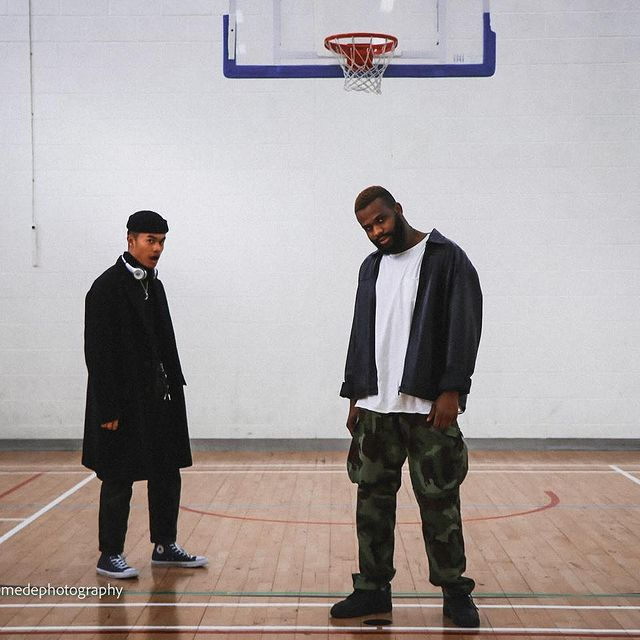
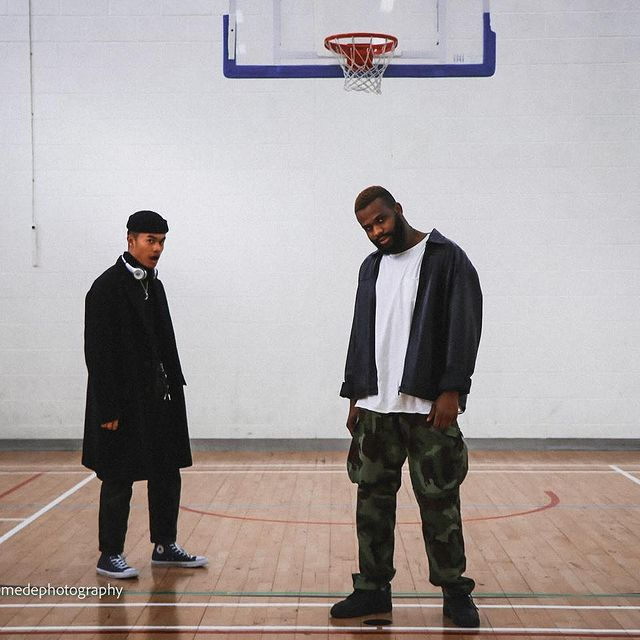
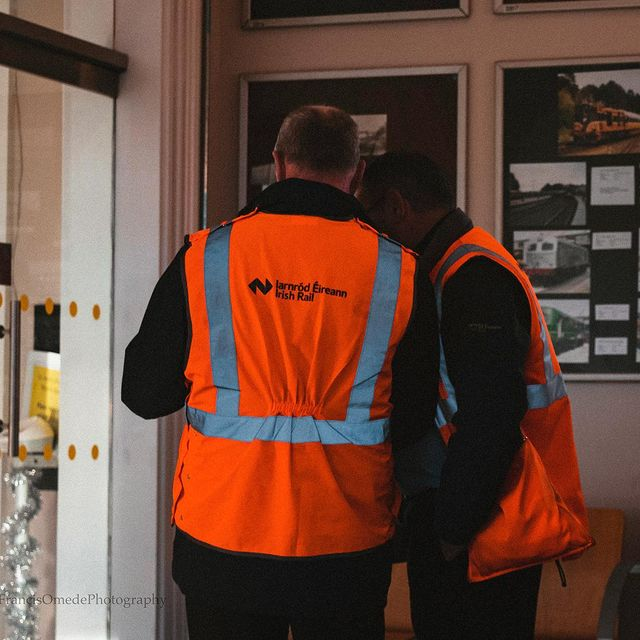
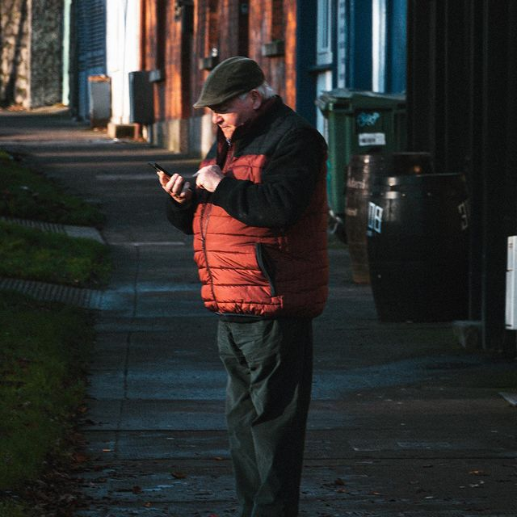
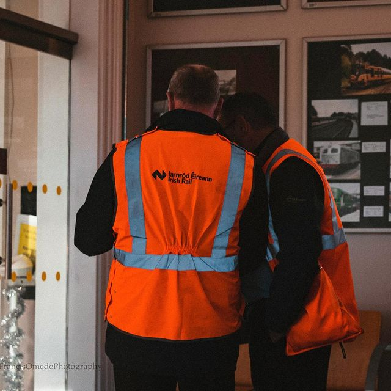
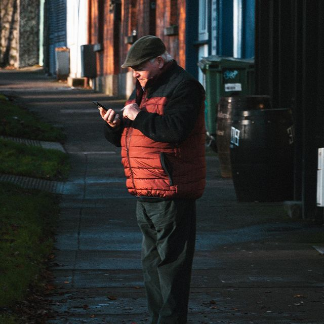

My Photography
Why I Love Photography?
Photography makes a difference and opens my mind. It drives me to see things from diverse points, which needs having distinctive viewpoints and being open-minded. I discover that has extended to the rest of my life as well and I can presently think out of the box in almost different regions of my life.
Photography makes a difference for me to keep in mind my life and the individuals in it, the places I visit, the things I cherish, in distant more noteworthy detail, colour, and profundity than in the event that I had not taken a photo! Being able to record recollections is one major reason why I cherish photography.
 
   
 